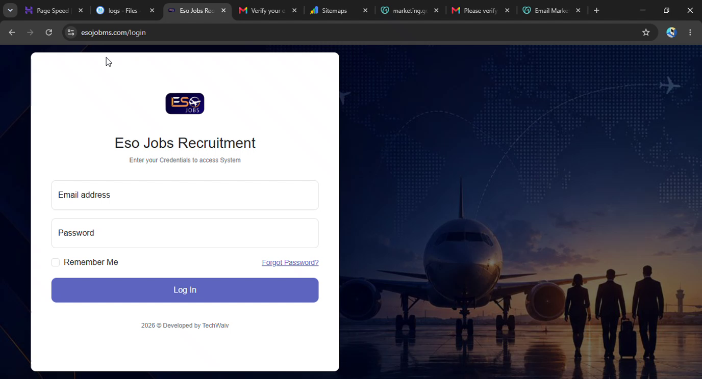

Multi-role authentication
Distinct dashboards for admins, recruiters, receptionists and candidates.
Blog case study / Recruitment operations
A secure, comprehensive recruitment and candidate management platform that supports Eso Jobs' operations from candidate registration and application tracking to appointments and invoicing.

The project
Connect candidate records, job orders, appointments and finance in a secure team workflow.
While the public Eso Jobs website connects candidates to opportunities, a dedicated platform manages the operation behind the scenes. TechWaiv built a recruitment and candidate management system for registering candidates, tracking applications, scheduling appointments and handling invoicing.
Recruitment involves candidates at different stages, job orders from client companies, appointments, payments and a team with distinct responsibilities. The platform brings these moving parts into a centralized workflow designed around the way the team works.
Problem / Approach
System capabilities
Interconnected modules support the people, opportunities and administrative work involved in recruitment.
Distinct dashboards for admins, recruiters, receptionists and candidates.
Candidate registration, profiles, document management and ledgers.
Manage client companies and the job orders that drive recruitment activity.
Track application stages through filterable views and coordinated workflows.
Coordinate appointments with a calendar view and automated reminders.
Handle invoices, payment tracking, receipts, expenses and reporting.
Deliver real-time updates to recruiters as recruitment activity progresses.
Configure branches and organization-wide settings for super admins.
Operational workflows
Technology and implementation
The system uses CodeIgniter and PHP with an MVC architecture, chosen to support secure workflows and ongoing maintenance as the operation grows.
Results / Value
The management system is live and actively powering Eso Jobs' recruitment operations.
Lessons and next steps
The project reinforced the value of role-based design for complex operations, branch-aware access for multi-team data, and connecting candidate, pipeline and finance modules in a maintainable MVC system.
Future improvements will continue to enhance pipeline analytics, the candidate experience and reporting capabilities.
TechWaiv can help you streamline operations with a secure system designed around your business.